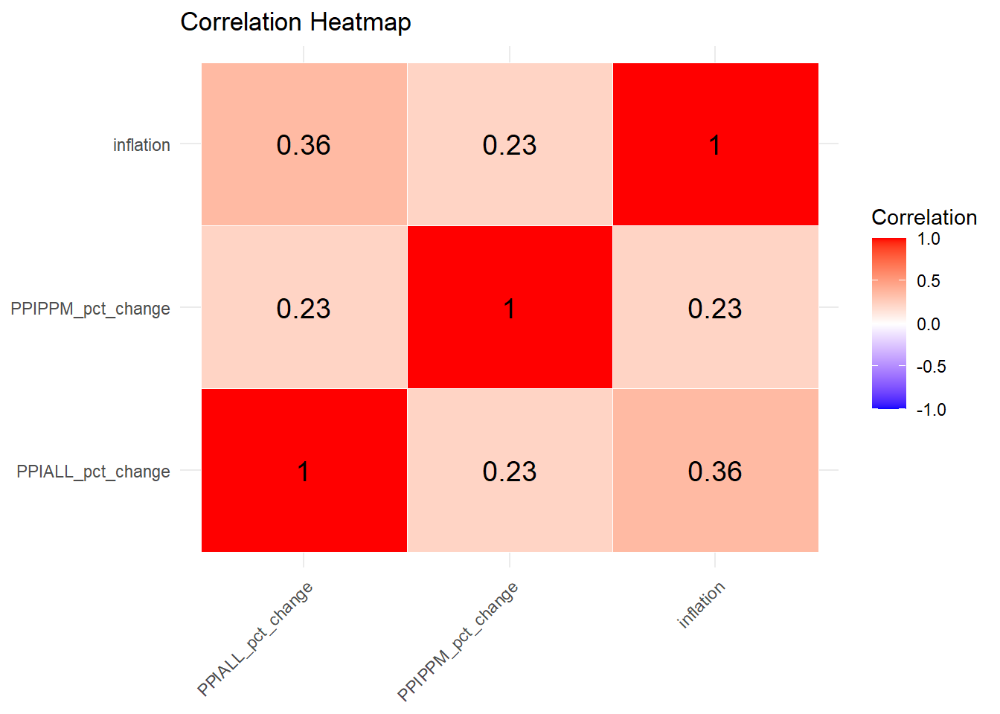
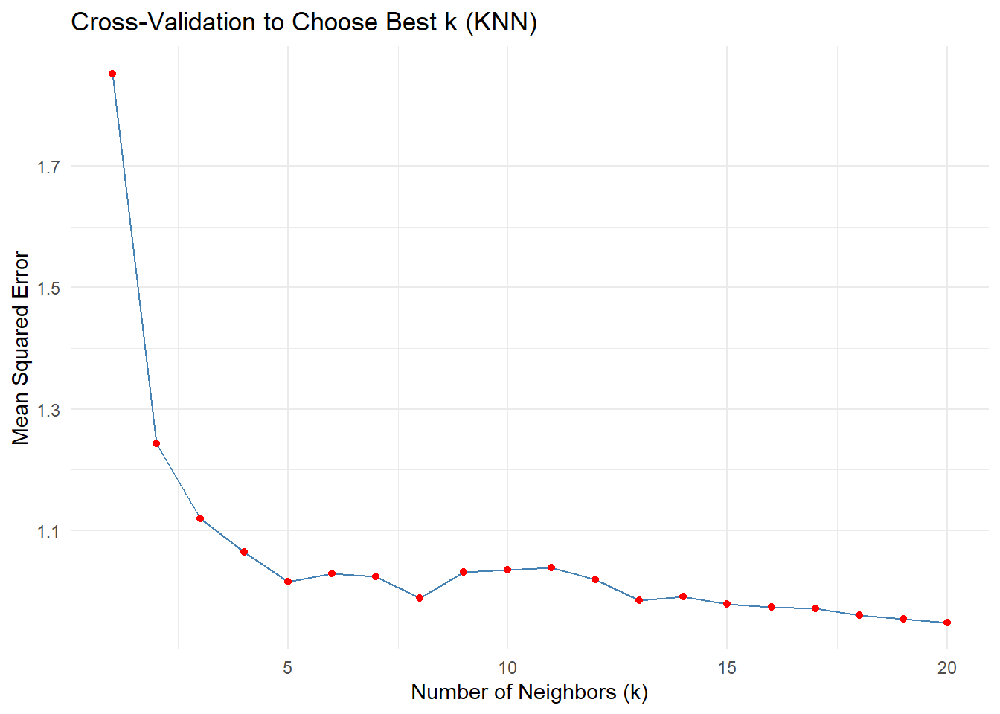
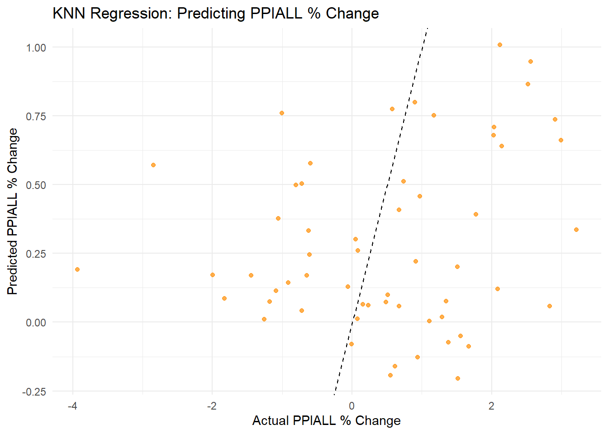
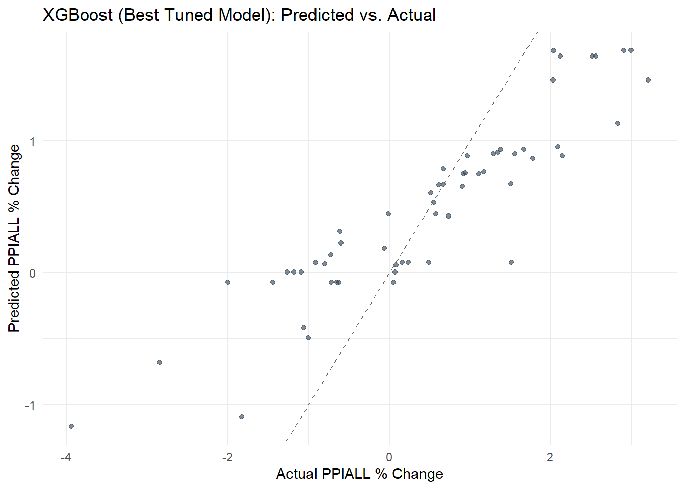
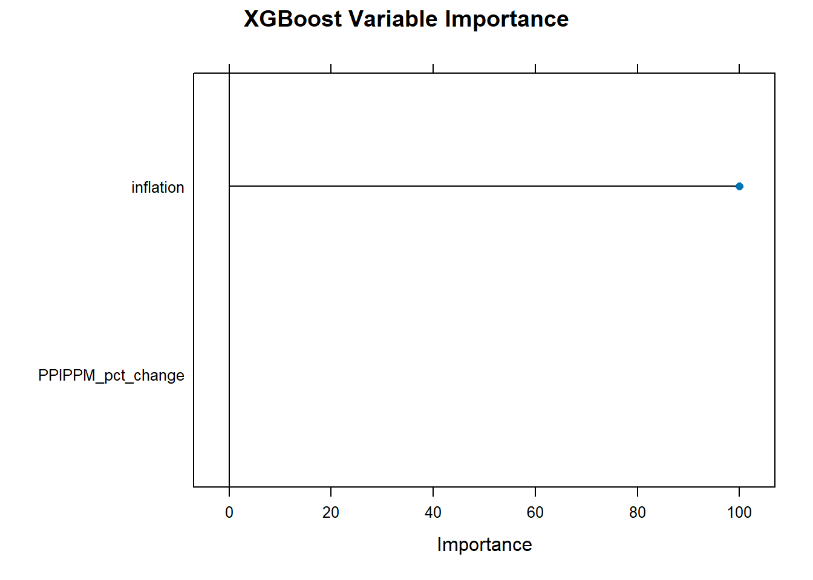

Leveraging Machine Learning to Optimize Prescription Drug Pricing in Pharmacies
Abstract
This paper aims to find out how pharmacies set their drug prices to reflect what is happening around them. We first want to see how inflation affects the producer price index for all commodities and for pharmaceutical preparation manufacturing. This is done in hopes to see how much inflation takes place for pricing. Next we will use inflation over the last 5 years and see how one drug price is affected, and then to all drug pricing that is reported. Hopefully machine learning can help not only pharmacies choose pricing, but also help consumers understand the changes in pricing.
Introduction
This study explores the relationship between macroeconomic indicators—specifically inflation and production costs—and prescription drug pricing. Using data from June 2020 to January 2025, we combine the National Average Drug Acquisition Cost (NADAC), the Producer Price Index (PPI) for all commodities and Pharmaceutical Preparation Manufacturing (PPIPPM), and inflation expectations. The goal is to identify trends that could inform predictive models, allowing pharmaceutical companies to better anticipate changes in pricing and improve profit management.
Literature Review
We use NADAC rather than the Average Wholesale Price (AWP), as discussed in the Capital Rx article What is NADAC & How Does It Differ From AWP?, which states: "AWP is an artificial number that is generally highly inflated from the manufacturer's price" (CapRx.com, 3rd paragraph). The article notes that while consumer-facing prices have remained relatively consistent over the past seven years, NADAC has declined by approximately 55% during the same period.
Additionally, the Ohio State University College of Pharmacy's article Shedding Light on NADAC emphasizes how NADAC, though voluntary, provides a useful pricing benchmark. The paper also highlights proposed legislation to mandate pharmacy participation, but warns that "transparency alone is not enough" (Murphy & Rodis, final paragraph). This suggests a need for additional tools—such as machine learning—to better understand and forecast price dynamics.
Data
We collected data from FRED (Federal Reserve Bank of St. Louis) for PPI across all commodities (PPIALL) and pharmaceutical preparation manufacturing (PPIPPM), along with inflation tracking data. NADAC data was sourced from Medicaid.gov. The chosen timeframe—from June 1, 2020 to January 1, 2025—excludes early pandemic volatility to reduce noise. One-off drug entries were excluded to avoid extreme outliers and ensure we focus on consistent pricing trends.
Data inspection
The standardized monthly percentage changes in inflation, PPIALL, and PPIPPM reveal distinct volatility patterns. Notably, inflation appears to have a weak correlation with PPIPPM, though one might expect pharmaceutical prices to mirror broader commodity trends. The computed Pearson correlation coefficients show moderate correlation between inflation and PPIALL (0.36), and weak correlations between the other variable pairs (around 0.26). This suggests inflation moderately impacts overall commodity prices but has limited direct influence on pharmaceutical-specific indices.
With the above graph, you can see that inflation doesn’t seem to directly affect PPIALL or PPIPPM. But also, PPIPPM is a commodity that is captured in PPIALL. Thinking about that, at face value, one would expect to see PPIALL to be correlated to PPIPPM. Let’s see the correlation.

We see with a correlation of 0.36, Inflation is most correlated to PPIALL, and vice versa. While the we see Inflation is correlated to PPIPPM at 0.26 and the same for PPIPPM to PPIALL. These show there is moderate positive correlation from Inflation to PPIALL, meaning as one goes up, the other will also go up, just moderately. The other show weak positive correlation, meaning if one goes up, the other could go up, but not by much. We take this as Inflation wouldn’t affect PPIPPM and PPIPPM wouldn’t affect PPIALL, or at least as much as we would have hoped for. Let’s see though, how much Inflation and PPIPPM will change PPIALL. We hope to see that both will change the PPIALL.
Modeling Selection
We begin modeling using K-Nearest Neighbors (KNN) with Leave-One-Out Cross-Validation (LOOCV), identifying the optimal number of neighbors as k=20.

Now let’s apply the best k and see what we get.

We see the positive trend that we expected. As Inflation and PPIPPM increase, PPIALL is expected to change in a positive way. Though we do not see this a very good model. Let’s try some more. In fact, let’s try Linear Regression, Random Forest, and XGBoost and compare the root mean square error (RMSE) where we want the model with the lowest value here.
Model Comparison Selection
Model Train_RMSE Test_RMSE
1 Linear Regression 1.3974481 1.232874
2 Random Forest 0.6871463 1.291059
3 XGBoost 0.9557678 1.181240
Based on the RMSE values, XGBoost outperforms the other models on test data. We therefore use XGBoost to model PPIALL as a function of PPIPPM and inflation.

Now we think, which feature is more important for predicting change in PPIALL, Inflation or PPIPPM?
Feature Importance
Let use recursive feature elimination (RFE) for the XGBoost.

We apply inflation as a predictor to estimate future NADAC values for Esomeprazole 20MG capsules—the most frequently reported drug in our dataset. The model shows that as inflation rises, NADAC values trend upward, supporting the idea that pharmacies may adjust costs in response to economic conditions.
Predicting Drug Prices Using Inflation
When generalized to all drugs in the data set, the predictive model exhibits higher variance. This is likely due to irregularly reported and high-cost drugs skewing the results. Nevertheless, average NADAC values tend to track above inflation-predicted prices.
There is more variance here. This most likely due to drugs that are reported less and cost more. But the overall looks like that NADAC prices are now above the predicted.
Conclusion
This study examined how inflation and production cost indicators influence drug pricing, using NADAC as the dependent variable. Our findings suggest that inflation moderately predicts PPIALL, and in turn, can be used to anticipate changes in drug pricing. However, variability across drug types—especially those with infrequent reporting or high prices—limits the precision of general predictions. Future research could focus on specific drug categories, incorporate additional economic variables (e.g., generic entry, policy changes), and explore international supply chain effects.
Works cited
Medicaid.gov. "National Average Drug Acquisition Cost." Medicaid, www.medicaid.gov/medicaid/nadac. Accessed 22 July 2025.
Federal Reserve Eduction Department, Federal Reserve Bank of St. Louis. "Producer Price Index by Commodity: All Commodities." FRED, 16 July 2025, fred.stlouisfed.org/series/PPIACO.
Levy, Joseph, et al. "A Transparent and Consistent Approach to Assess US Outpatient Drug Costs for Use in Cost-Effectiveness Analyses." Value in Health : The Journal of the International Society for Pharmacoeconomics and Outcomes Research, U.S. National Library of Medicine, 1 June 2018, pmc.ncbi.nlm.nih.gov/articles/PMC6394851/.
Murphy, Michael, and Jennifer Rodis. "Shedding Light on NADAC: How Pricing Power Influences Pharmacy Reimbursement." Shedding Light on NADAC: How Pricing Power Influences Pharmacy Reimbursement | The Ohio State University College of Pharmacy, The Ohio State University College of Pharmacy, 26 June 2025, pharmacy.osu.edu/news/shedding-light-nadac-how-pricing-power-influences-pharmacy-reimbursement#:~:text=The%20NADAC%20disruptions%20of%202024,(PBMs)%20for%20drugs%20dispensed.
Unknown. "What Is NADAC & How Does It Differ from AWP?: Capital Rx." RSS, 18 Oct. 2024, www.cap-rx.com/insights/what-is-nadac-how-does-it-differ-from-awp.
Source Code
---title: "ML for Big Pharma"author: "Orin Crouse"date: 08/07/2025date-format: "DD/MM/YYYY"format: html: code-fold: true code-tools: trueeditor: visualexecute: echo: false enabled: true---```{r setup_libraries, echo=FALSE, message=FALSE, warning=FALSE}library(dplyr)library(tidyr)library(ggplot2)library(scales)library(readr)library(lubridate)library(ggfortify)library(zoo)library(lmtest)library(forecast)library(tseries)library(vars)library(Metrics)library(randomForest)library(xgboost)library(Matrix)library(FNN)library(corrplot)library(FNN)library(caret)library(plotly)# Read in the datasetsdf <-read.csv("merged_combined_drug_econ_data.csv")df <- df %>%rename(inflation = T5YIE,PPIPPM = PPI_PPM )```# Leveraging Machine Learning to Optimize Prescription Drug Pricing in Pharmacies## AbstractThis paper aims to find out how pharmacies set their drug prices to reflect what is happening around them. We first want to see how inflation affects the producer price index for all commodities and for pharmaceutical preparation manufacturing. This is done in hopes to see how much inflation takes place for pricing. Next we will use inflation over the last 5 years and see how one drug price is affected, and then to all drug pricing that is reported. Hopefully machine learning can help not only pharmacies choose pricing, but also help consumers understand the changes in pricing.## IntroductionThis study explores the relationship between macroeconomic indicators---specifically inflation and production costs---and prescription drug pricing. Using data from June 2020 to January 2025, we combine the National Average Drug Acquisition Cost (NADAC), the Producer Price Index (PPI) for all commodities and Pharmaceutical Preparation Manufacturing (PPIPPM), and inflation expectations. The goal is to identify trends that could inform predictive models, allowing pharmaceutical companies to better anticipate changes in pricing and improve profit management.## Literature ReviewWe use NADAC rather than the Average Wholesale Price (AWP), as discussed in the Capital Rx article *What is NADAC & How Does It Differ From AWP?*, which states: \"AWP is an artificial number that is generally highly inflated from the manufacturer\'s price\" (CapRx.com, 3rd paragraph). The article notes that while consumer-facing prices have remained relatively consistent over the past seven years, NADAC has declined by approximately 55% during the same period.Additionally, the Ohio State University College of Pharmacy\'s article *Shedding Light on NADAC* emphasizes how NADAC, though voluntary, provides a useful pricing benchmark. The paper also highlights proposed legislation to mandate pharmacy participation, but warns that \"transparency alone is not enough\" (Murphy & Rodis, final paragraph). This suggests a need for additional tools---such as machine learning---to better understand and forecast price dynamics.## DataWe collected data from FRED (Federal Reserve Bank of St. Louis) for PPI across all commodities (PPIALL) and pharmaceutical preparation manufacturing (PPIPPM), along with inflation tracking data. NADAC data was sourced from Medicaid.gov. The chosen timeframe---from June 1, 2020 to January 1, 2025---excludes early pandemic volatility to reduce noise. One-off drug entries were excluded to avoid extreme outliers and ensure we focus on consistent pricing trends.### Data inspectionThe standardized monthly percentage changes in inflation, PPIALL, and PPIPPM reveal distinct volatility patterns. Notably, inflation appears to have a weak correlation with PPIPPM, though one might expect pharmaceutical prices to mirror broader commodity trends. The computed Pearson correlation coefficients show moderate correlation between inflation and PPIALL (0.36), and weak correlations between the other variable pairs (around 0.26). This suggests inflation moderately impacts overall commodity prices but has limited direct influence on pharmaceutical-specific indices.```{r compar plot, echo=FALSE, warning=FALSE, message=FALSE}# Parse monthdf$month <-mdy(df$month)# Calculate PPI % changes, keep inflation as levelppi_inflation_plot <- df %>% dplyr::select(month, PPIALL, PPIPPM, inflation) %>%distinct() %>%arrange(month) %>%mutate(PPIALL_pct_change =100* (PPIALL /lag(PPIALL) -1),PPIPPM_pct_change =100* (PPIPPM /lag(PPIPPM) -1) ) %>%filter(!is.na(PPIALL_pct_change), !is.na(PPIPPM_pct_change), !is.na(inflation))# Reshape to long formatppi_pct <- ppi_inflation_plot %>% dplyr::select(month, PPIALL_pct_change, PPIPPM_pct_change) %>%pivot_longer(cols =-month, names_to ="Index", values_to ="Value")inflation_level <- ppi_inflation_plot %>% dplyr::select(month, inflation) %>%rename(Value = inflation) %>%mutate(Index ="Inflation")# Combineplot_data <-bind_rows(ppi_pct, inflation_level)# Filter out March–June 2020plot_data <- plot_data %>%filter(month <as.Date("2020-03-01") | month >as.Date("2020-06-30")) %>%filter(!is.na(month) &is.finite(month))# Plot with facets for separate y-axesggplot(plot_data, aes(x = month, y = Value, color = Index)) +geom_line(size =1) +facet_wrap(~Index, scales ="free_y", ncol =1) +scale_x_date(date_breaks ="3 months", date_labels ="%b %Y") +labs(title ="PPIALL and PPIPPM (% Change), Inflation (Level)",x ="Month",y ="Value" ) +theme_minimal() +theme(axis.text.x =element_text(angle =45, hjust =1),legend.position ="none" )```With the above graph, you can see that inflation doesn't seem to directly affect PPIALL or PPIPPM. But also, PPIPPM is a commodity that is captured in PPIALL. Thinking about that, at face value, one would expect to see PPIALL to be correlated to PPIPPM. Let's see the correlation.```{r corr_viz, echo=FALSE}# Step 1: Prepare correlation matrixcor_df <- ppi_inflation_plot %>% dplyr::select(PPIALL_pct_change, PPIPPM_pct_change, inflation) %>%drop_na()cor_matrix <-cor(cor_df, use ="complete.obs")# Step 2: Convert to long format for ggplotcor_long <-as.data.frame(as.table(cor_matrix))colnames(cor_long) <-c("Var1", "Var2", "Correlation")# Step 3: Plot heatmapggplot(cor_long, aes(x = Var1, y = Var2, fill = Correlation)) +geom_tile(color ="white") +geom_text(aes(label =round(Correlation, 2)), size =5) +scale_fill_gradient2(low ="blue", high ="red", mid ="white", midpoint =0, limit =c(-1,1), space ="Lab", name ="Correlation") +theme_minimal() +labs(title ="Correlation Heatmap") +theme(axis.text.x =element_text(angle =45, vjust =1, hjust =1),axis.title =element_blank())```We see with a correlation of 0.36, Inflation is most correlated to PPIALL, and vice versa. While the we see Inflation is correlated to PPIPPM at 0.26 and the same for PPIPPM to PPIALL. These show there is moderate positive correlation from Inflation to PPIALL, meaning as one goes up, the other will also go up, just moderately. The other show weak positive correlation, meaning if one goes up, the other could go up, but not by much. We take this as Inflation wouldn't affect PPIPPM and PPIPPM wouldn't affect PPIALL, or at least as much as we would have hoped for. Let's see though, how much Inflation and PPIPPM will change PPIALL. We hope to see that both will change the PPIALL.### Modeling SelectionWe begin modeling using K-Nearest Neighbors (KNN) with Leave-One-Out Cross-Validation (LOOCV), identifying the optimal number of neighbors as k=20.```{r choose_k, echo=FALSE}# Prepare and scale dataknn_data <- ppi_inflation_plot %>% dplyr::select(PPIALL_pct_change, PPIPPM_pct_change, inflation) %>%drop_na()scaled_data <-scale(knn_data)X <-as.matrix(scaled_data[, c("PPIPPM_pct_change", "inflation")])y <- scaled_data[, "PPIALL_pct_change"]# Range of k valuesk_vals <-1:20mse_vals <-numeric(length(k_vals))# LOOCV for each kfor (i inseq_along(k_vals)) { k <- k_vals[i] preds <-numeric(nrow(X))for (j in1:nrow(X)) { X_train <- X[-j, , drop =FALSE] y_train <- y[-j] X_test <- X[j, , drop =FALSE] preds[j] <-knn.reg(train = X_train, test = X_test, y = y_train, k = k)$pred } mse_vals[i] <-mean((y - preds)^2)}# Plot MSE vs kcv_results <-data.frame(k = k_vals, MSE = mse_vals)ggplot(cv_results, aes(x = k, y = MSE)) +geom_line(color ="steelblue") +geom_point(color ="red") +labs(title ="Cross-Validation to Choose Best k (KNN)",x ="Number of Neighbors (k)",y ="Mean Squared Error" ) +theme_minimal()# Print best kbest_k <- cv_results$k[which.min(cv_results$MSE)]#cat("We find the best k-value to use is:", best_k, "\n")```Now let's apply the best k and see what we get.```{r knn_reg_best_k, echo=FALSE}# Prepare data (drop NAs)knn_data <- ppi_inflation_plot %>% dplyr::select(PPIALL_pct_change, PPIPPM_pct_change, inflation) %>%drop_na()# Scale the datascaled_data <-scale(knn_data)# Extract predictor matrix (X) and target (y)X <-as.matrix(scaled_data[, c("PPIPPM_pct_change", "inflation")])y <- scaled_data[, "PPIALL_pct_change"]# Fit KNN (e.g., k = 5)knn_fit <-knn.reg(train = X, y = y, k =20)# Rescale predictions back to original PPIALL_pct_change scaley_pred <- knn_fit$pred *sd(knn_data$PPIALL_pct_change) +mean(knn_data$PPIALL_pct_change)# Create dataframe for plottingplot_df <-data.frame(actual = knn_data$PPIALL_pct_change,predicted = y_pred)# Plot: Actual vs Predictedggplot(plot_df, aes(x = actual, y = predicted)) +geom_point(color ="darkorange", alpha =0.7) +geom_abline(intercept =0, slope =1, linetype ="dashed") +labs(title ="KNN Regression: Predicting PPIALL % Change",x ="Actual PPIALL % Change",y ="Predicted PPIALL % Change" ) +theme_minimal()```We see the positive trend that we expected. As Inflation and PPIPPM increase, PPIALL is expected to change in a positive way. Though we do not see this a very good model. Let's try some more. In fact, let's try Linear Regression, Random Forest, and XGBoost and compare the root mean square error (RMSE) where we want the model with the lowest value here.### Model Comparison Selection```{r compare_3_RMSE, echo=FALSE}# Use the cleaned datasetdf_model <- ppi_inflation_plot %>% dplyr::select(PPIALL_pct_change, PPIPPM_pct_change, inflation) %>%drop_na()# Prepare inputsX_full <-as.matrix(df_model[, c("PPIPPM_pct_change", "inflation")])y_full <- df_model$PPIALL_pct_change# Train/test splitset.seed(42)train_idx <-createDataPartition(y_full, p =0.8, list =FALSE)X_train <- X_full[train_idx, ]y_train <- y_full[train_idx]X_test <- X_full[-train_idx, ]y_test <- y_full[-train_idx]# ---------- LINEAR REGRESSION ----------train_lm_df <-data.frame(PPIALL_pct_change = y_train,PPIPPM_pct_change = X_train[,1],inflation = X_train[,2])test_lm_df <-data.frame(PPIPPM_pct_change = X_test[,1],inflation = X_test[,2])lm_model <-lm(PPIALL_pct_change ~ ., data = train_lm_df)lm_pred_train <-predict(lm_model, newdata = train_lm_df)lm_pred_test <-predict(lm_model, newdata = test_lm_df)# ---------- RANDOM FOREST ----------rf_model <-randomForest(PPIALL_pct_change ~ ., data = train_lm_df)rf_pred_train <-predict(rf_model, newdata = train_lm_df)rf_pred_test <-predict(rf_model, newdata = test_lm_df)# ---------- XGBOOST (FINAL MODEL with tuned params) ----------# Create DMatrix objectsdtrain <-xgb.DMatrix(data = X_train, label = y_train)dtest <-xgb.DMatrix(data = X_test)# Define tuned parametersfinal_params <-list(objective ="reg:squarederror",eta =0.01,max_depth =6,gamma =0,colsample_bytree =1,min_child_weight =1,subsample =1)# Fit the tuned XGBoost modelset.seed(42)xgb_final <-xgboost(data = dtrain,params = final_params,nrounds =100,verbose =0)# Predict on training and test setsxgb_pred_train <-predict(xgb_final, newdata = dtrain)xgb_pred_test <-predict(xgb_final, newdata = dtest)# ---------- RMSE Comparison ----------results <-data.frame(Model =c("Linear Regression", "Random Forest", "XGBoost"),Train_RMSE =c(rmse(y_train, lm_pred_train),rmse(y_train, rf_pred_train),rmse(y_train, xgb_pred_train) ),Test_RMSE =c(rmse(y_test, lm_pred_test),rmse(y_test, rf_pred_test),rmse(y_test, xgb_pred_test) ))print(results)```Based on the RMSE values, XGBoost outperforms the other models on test data. We therefore use XGBoost to model PPIALL as a function of PPIPPM and inflation.```{r best_for_xg, echo=FALSE, warning=FALSE, message=FALSE, include=FALSE}# Prepare the data againxgb_data <- ppi_inflation_plot %>% dplyr::select(PPIALL_pct_change, PPIPPM_pct_change, inflation) %>%drop_na()# Input and responseX <-as.matrix(xgb_data[, c("PPIPPM_pct_change", "inflation")])y <- xgb_data$PPIALL_pct_change# Combine into one dataframe for caretdf <-data.frame(PPIALL_pct_change = y, PPIPPM_pct_change = X[,1], inflation = X[,2])# Set up cross-validationset.seed(42)cv_control <-trainControl(method ="cv", number =5)# Define grid of hyperparametersxgb_grid <-expand.grid(nrounds =c(50, 100, 150),max_depth =c(2, 4, 6, 8),eta =c(0.01, 0.05, 0.1, 0.3),gamma =0,colsample_bytree =1,min_child_weight =1,subsample =1)# Train using caret with XGBoostxgb_model <-train( PPIALL_pct_change ~ .,data = df,method ="xgbTree",trControl = cv_control,tuneGrid = xgb_grid,metric ="RMSE")``````{r xg_old_plot, echo=FALSE, message=FALSE, warning=FALSE}# Make predictions on the training setpredictions <-predict(xgb_model, newdata = df)# Create comparison dataframecomparison_df <-data.frame(Actual = df$PPIALL_pct_change,Predicted = predictions)ggplot(comparison_df, aes(x = Actual, y = Predicted)) +geom_point(alpha =0.6, color ="#2C3E50") +geom_abline(slope =1, intercept =0, linetype ="dashed", color ="gray40") +labs(title ="XGBoost (Best Tuned Model): Predicted vs. Actual",x ="Actual PPIALL % Change",y ="Predicted PPIALL % Change" ) +theme_minimal()```Now we think, which feature is more important for predicting change in PPIALL, Inflation or PPIPPM?### Feature ImportanceLet use recursive feature elimination (RFE) for the XGBoost.```{r rfe_setup, echo=FALSE, include=FALSE}# Control settingscontrol <-rfeControl(functions = caretFuncs, method ="cv", number =5)# Perform RFEset.seed(123)xgb_rfe <-rfe(x = df[, c("PPIPPM_pct_change", "inflation")], # all predictorsy = df$PPIALL_pct_change,sizes =c(1, 2), # number of features to tryrfeControl = control,method ="xgbTree")``````{r rfe, echo=FALSE}varImpPlot <-varImp(xgb_model)plot(varImpPlot, main ="XGBoost Variable Importance")```We apply inflation as a predictor to estimate future NADAC values for Esomeprazole 20MG capsules---the most frequently reported drug in our dataset. The model shows that as inflation rises, NADAC values trend upward, supporting the idea that pharmacies may adjust costs in response to economic conditions.### Predicting Drug Prices Using Inflation```{r inflation to predict eso, echo=FALSE}df <-read.csv("merged_combined_drug_econ_data.csv")df <- df %>%rename(inflation = T5YIE,PPIPPM = PPI_PPM,NADAC = NADAC.Per.Unit )df <- df %>%mutate(month =mdy(df$month))# Step 1: Filter for Esomeprazole 20 MGdrug_df <- df %>%filter(NDC.Description =="ESOMEPRAZOLE MAG DR 20 MG CAP") %>% dplyr::select(month, NADAC, inflation) %>%drop_na()# Step 2: Train/Test Splitset.seed(42)train_idx <-createDataPartition(drug_df$NADAC, p =0.8, list =FALSE)train_data <- drug_df[train_idx, ]test_data <- drug_df[-train_idx, ]# Step 3: Log-transform NADAC (optional but helpful)y_train_log <-log1p(train_data$NADAC)y_test_log <-log1p(test_data$NADAC)X_train <-as.matrix(train_data$inflation)X_test <-as.matrix(test_data$inflation)dtrain <-xgb.DMatrix(data = X_train, label = y_train_log)dtest <-xgb.DMatrix(data = X_test, label = y_test_log)# Step 4: XGBoost Parametersparams <-list(objective ="reg:squarederror",eta =0.01,max_depth =6,subsample =1,colsample_bytree =1)# Step 5: Train XGBoost modelset.seed(42)xgb_model <-xgboost(data = dtrain,params = params,nrounds =100,verbose =0)# Step 6: Predictionstrain_pred_log <-predict(xgb_model, dtrain)test_pred_log <-predict(xgb_model, dtest)# Convert back to original scaletrain_pred <-expm1(train_pred_log)test_pred <-expm1(test_pred_log)# Step 1: Get last 3 months from the datasetlast_3_months <- df %>% dplyr::arrange(desc(.data$month)) %>%distinct(month, .keep_all =TRUE) %>%slice_head(n =3) %>% dplyr::arrange(.data$month)# Step 2: Actual values for all monthsactual_df <- drug_df %>% dplyr::select(month, NADAC)# Step 3: Predicted values for last 3 monthspredicted_df <-data.frame(month = last_3_months$month,NADAC = test_pred[1:3])# Step 4: Plot actual vs predictedggplot() +# Actual NADAC line (all months)geom_line(data = actual_df, aes(x = month, y = NADAC, color ="Actual"), size =1.2) +# Predicted NADAC line and points (last 3 months only)geom_line(data = predicted_df, aes(x = month, y = NADAC, color ="Predicted"), linetype ="dashed", size =1.2) +geom_point(data = predicted_df, aes(x = month, y = NADAC, color ="Predicted"), size =3) +scale_color_manual(values =c("Actual"="red", "Predicted"="blue")) +labs(title ="Actual vs Predicted NADAC (Last 3 Months)",subtitle =paste("Drug:", unique(drug_df$NDC.Description)),x ="Year",y ="NADAC",color ="Legend" ) +theme_minimal()```When generalized to all drugs in the data set, the predictive model exhibits higher variance. This is likely due to irregularly reported and high-cost drugs skewing the results. Nevertheless, average NADAC values tend to track above inflation-predicted prices.```{r inflation to predict all drugs, echo=FALSE}# Step 1: Prepare full dataset (no filtering by drug)all_drugs_df <- df %>% dplyr::select(month, NADAC, inflation) %>%drop_na()# Step 2: Train/Test Splitset.seed(42)train_idx <-createDataPartition(all_drugs_df$NADAC, p =0.8, list =FALSE)train_data <- all_drugs_df[train_idx, ]test_data <- all_drugs_df[-train_idx, ]# Step 3: Log-transform NADACy_train_log <-log1p(train_data$NADAC)y_test_log <-log1p(test_data$NADAC)X_train <-as.matrix(train_data$inflation)X_test <-as.matrix(test_data$inflation)dtrain <-xgb.DMatrix(data = X_train, label = y_train_log)dtest <-xgb.DMatrix(data = X_test, label = y_test_log)# Step 4: XGBoost Parametersparams <-list(objective ="reg:squarederror",eta =0.01,max_depth =6,subsample =1,colsample_bytree =1)# Step 5: Train XGBoost modelset.seed(42)xgb_model <-xgboost(data = dtrain,params = params,nrounds =100,verbose =0)# Step 6: Predictionstrain_pred_log <-predict(xgb_model, dtrain)test_pred_log <-predict(xgb_model, dtest)# Convert predictions back to original scaletrain_pred <-expm1(train_pred_log)test_pred <-expm1(test_pred_log)# Step 7: Get last 3 months in datasetlast_3_months <- all_drugs_df %>% dplyr::arrange(desc(.data$month)) %>%distinct(month, .keep_all =TRUE) %>%slice_head(n =3) %>% dplyr::arrange(month)# Step 8: Actual NADAC values across all monthsactual_df <- all_drugs_df %>% dplyr::select(month, NADAC)# Step 9: Predicted values for last 3 monthspredicted_df <-data.frame(month = last_3_months$month,NADAC = test_pred[1:3] # just first 3 test preds)# Step 10: Plot actual vs predictedggplot() +geom_line(data = actual_df, aes(x = month, y = NADAC, color ="Actual"), size =1.2) +geom_line(data = predicted_df, aes(x = month, y = NADAC, color ="Predicted"), linetype ="dashed", size =1.2) +geom_point(data = predicted_df, aes(x = month, y = NADAC, color ="Predicted"), size =3) +scale_color_manual(values =c("Actual"="red", "Predicted"="blue")) +labs(title ="Actual vs Predicted NADAC (Last 3 Months)",subtitle ="All Drugs Combined",x ="Month",y ="NADAC",color ="Legend" ) +theme_minimal()```There is more variance here. This most likely due to drugs that are reported less and cost more. But the overall looks like that NADAC prices are now above the predicted.## ConclusionThis study examined how inflation and production cost indicators influence drug pricing, using NADAC as the dependent variable. Our findings suggest that inflation moderately predicts PPIALL, and in turn, can be used to anticipate changes in drug pricing. However, variability across drug types---especially those with infrequent reporting or high prices---limits the precision of general predictions. Future research could focus on specific drug categories, incorporate additional economic variables (e.g., generic entry, policy changes), and explore international supply chain effects.## Works citedMedicaid.gov. \"National Average Drug Acquisition Cost.\" *Medicaid*, www.medicaid.gov/medicaid/nadac. Accessed 22 July 2025.Federal Reserve Eduction Department, Federal Reserve Bank of St. Louis. \"Producer Price Index by Commodity: All Commodities.\" *FRED*, 16 July 2025, fred.stlouisfed.org/series/PPIACO.Levy, Joseph, et al. \"A Transparent and Consistent Approach to Assess US Outpatient Drug Costs for Use in Cost-Effectiveness Analyses.\" *Value in Health : The Journal of the International Society for Pharmacoeconomics and Outcomes Research*, U.S. National Library of Medicine, 1 June 2018, pmc.ncbi.nlm.nih.gov/articles/PMC6394851/.Murphy, Michael, and Jennifer Rodis. \"Shedding Light on NADAC: How Pricing Power Influences Pharmacy Reimbursement.\" *Shedding Light on NADAC: How Pricing Power Influences Pharmacy Reimbursement \| The Ohio State University College of Pharmacy*, The Ohio State University College of Pharmacy, 26 June 2025, pharmacy.osu.edu/news/shedding-light-nadac-how-pricing-power-influences-pharmacy-reimbursement#:\~:text=The%20NADAC%20disruptions%20of%202024,(PBMs)%20for%20drugs%20dispensed.Unknown. \"What Is NADAC & How Does It Differ from AWP?: Capital Rx.\" *RSS*, 18 Oct. 2024, www.cap-rx.com/insights/what-is-nadac-how-does-it-differ-from-awp.